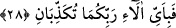

28. Öyleyken Rabbinizin hangi nimetlerini yalanlayabilirsiniz?
Onları Allah Teâlâ’nın ebedî bir hayat ile diriltmesi ve devamlı nimetlerini ihsân
etmesi, nimetlerin en yücesidir.
Tayyibî demiştir ki; muhatab bir olduğu halde, “Vechü Rabbike”deki zamir müfred,
Rabbikümâda ise nasıl tesniye gelmiştir? Ben derim ki, öncekinde iş çok ciddi ve büyük
olduğundan dolayı hitab edilmeğe kabiliyeti olan herkese ayrı ayrı hitabı genelleştirmek
gerekmiş olduğundan insan ile cin bu hitapda toplanmış ve “Rabbinin zâtı” buyurularak
her birine seslenilmiştir. İkincisi böyle olmadığından insan ve cin topluluğuna râci
tesniye zamiri ile bırakılmıştır.
“Yeryüzünde bulunan her canlı yok olacaktır.” (er-Rahmân, 55/26) âyet-i
kerîmesinde beşer zemininde bulunan herkesin yok olacağına bir işâret vardır. Bu yok
oluş ya bedenî lezzet ve zevklere, hayvanî şehvetlere dalarak tabii ölümle olur veya
beşerî zaaf ve sıfatlardan sıyrılarak rûhânî sıfatlara bürünerek isteğe bağlı ölümle olur.
Ayrıca, akıllılarda kullanılan “men” lafzının, hayal ve vehim gibi hastalıklardan sâlim
akıllı varlıklar çoğunluk kabul edilerek kullanıldığını da göstermektedir. Çünkü akl-ı
selîm sahibleri yaratılış zekaları ve topraklarının temizliği sebebiyle biyolojik
bağlardan kurtulup ilâhî tecellîlerle kalırlar. “Ancak azamet ve ikram sâhibi Rabbinin
zâtı bâki kalacak” (er-Rahmân, 55/27) âyet-i kerîmesi ile yine, isimlere dayalı nisbet
çokluğunun fânî, Cemal, Celal sıfatlarıyla nitelenmiş zât-ı ilâhîye mahsus vahdet-i
hakîkînin bâkî olduğu gösterilmiştir. Böyle olunca Rabbinizin nimetlerinden hangisini
yalanlayabilirsiniz? Bu nimetler, hakîkî hayatı bâkî, mecazî hayatı fânî kılmakla, ilâhî
lütfa hak kazanan kimse için Latif, kahra müstehak olan kimse hakkında da Kahhâr
sıfatını göstermekle, her şeyi kuşatan ilmiyle her iki taraftan kimin neye hak kazandığını
bildiği için bunları böyle yapmıştır. Bazıları demişlerdir ki; kâinâta araştırmacı bir
gözle bakacak olursan onun gerçekten fânî olduğunu, bu kâinatta bulunan yaratılmışların
da fânî olduğunu görürsün. Varlığı başkasına muhtâc olan bir şey gerçekte fânîdir.
Çünkü kendi kendine var olamaz, aslında kendi benliği yoktur. Hakikî vucud, gerçek
varlık, kıdem sıfatına sâhib olan varlıktır. Bu sebeple Allah zâtını “Ancak azamet ve
ikram sâhibi Rabbinin zâtı bâkî kalacaktır” âyet-i kerîmesiyle övmüştür.
Şeyh Mağribî şöyle demiştir:
Gölge, varlık ızhar eder; fakat aslı yoktur
Yokluğu varlıkta tanırsan kurtulursun.
Molla Câmî şöyle demiştir:
Sen ortada hiçbir şey bile değilsin, var olan her şey O’dur
Hem “elest” diye sorup hem “belî” diyen bizzat O’nun kendisidir.